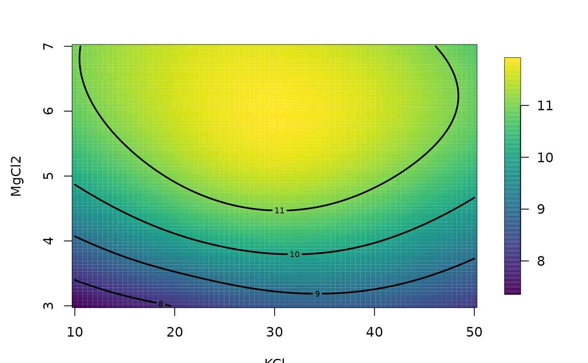

predictSurface.RdEvaluates a a fitted model or the prediction error on a 2-D grid keeping any other variables constant. The resulting object is suitable for use with functions for viewing 3-d surfaces.
# S3 method for default
predictSurface(object, grid.list = NULL,
extrap = FALSE, chull.mask = NA, nx = 80, ny = 80,
xy = c(1,2), verbose = FALSE, ...)
# S3 method for fastTps
predictSurface(object, gridList = NULL,
extrap = FALSE, chull.mask = NA, nx = 80, ny = 80,
xy = c(1,2), verbose = FALSE, ...)
# S3 method for Krig
predictSurface(object, grid.list = NULL, extrap = FALSE, chull.mask = NA,
nx = 80, ny = 80, xy = c(1, 2), verbose = FALSE, ZGrid = NULL,
drop.Z = FALSE, just.fixed=FALSE, ...)
# S3 method for mKrig
predictSurface(object, gridList = NULL, grid.list = NULL,
ynew =
NULL, extrap = FALSE, chull.mask = NA, nx = 80, ny =
80, xy = c(1, 2), verbose = FALSE, ZGrid = NULL,
drop.Z = FALSE, just.fixed = FALSE, fast = FALSE,
NNSize = 4, giveWarnings = FALSE, derivative = 0, ...)
mKrigFastPredict(object, gridList, ynew = NULL, derivative = 0, Z =
NULL, drop.Z = FALSE, NNSize = 5, setupObject = NULL,
giveWarnings = TRUE)
# S3 method for default
predictSurfaceSE(object, grid.list = NULL, extrap = FALSE, chull.mask =
NA, nx = 80, ny = 80, xy = c(1, 2), verbose = FALSE,
ZGrid = NULL, just.fixed = FALSE, ...)
# S3 method for surface
predict(object,...)An object from fitting a function to data. In fields this is usually a Krig, mKrig, or fastTps object.
A list with as many components as variables describing the surface.
All components should have a single value except the two that give the
grid points for evaluation. If the matrix or data frame has column names,
these must appear in the grid list. See the grid.list help file for more
details. If this is omitted and the fit just depends on two variables the
grid will be made from the ranges of the observed variables.
(See the function fields.x.to.grid.)
Alternative to the gridList argument.
If TRUE will warn when more than one observation is in a grid box.
Extrapolation beyond the range of the data. If FALSE (the
default) the predictions will be restricted to the convex hull of the observed
data or the convex hull defined from the points from the argument chull.mask.
This function may be slightly faster if this logical is set to
TRUE to avoid checking the grid points for membership in the
convex hull. For more complicated masking a low level creation of a bounding
polygon and testing for membership with in.poly may be useful.
Whether to restrict the fitted surface to be on a convex hull, NA's are assigned to values outside the convex hull. chull.mask should be a sequence of points defining a convex hull. Default is to form the convex hull from the observations if this argument is missing (and extrap is false).
Number of grid points in X axis.
Number of grid points in Y axis.
A two element vector giving the positions for the "X" and "Y"
variables for the surface. The positions refer to the columns of the x
matrix used to define the multidimensional surface. This argument is
provided in lieu of generating the grid list. If a 4 dimensional surface
is fit to data then xy= c(2,4) will evaluate a surface using the
second and fourth variables with variables 1 and 3 fixed at their median
values. NOTE: this argument is ignored if a grid.list argument is
passed.
If TRUE the fixed part of model depending on covariates is omitted.
If TRUE the nonparametric surface is omitted.
If TRUE approximate predictions for stationary models are made using the FFT. For large grids( e.g. nx, ny > 200) this can be substantially faster and still accurate to several decimal places.
Order of nearest neighborhood used for fast prediction. The default,NSize = 5, means an 11X11=121 set of grid points/covariance kernels are used to approximate the off-grid covariance kernel.
The object created explicitly using
mKrigFastPredictSetup. Useful for predicting multple surfaces with the same observation locations.
Predict the estimated derivatives of order derivative.
New data to use to refit the spatial model. Locations must be the same but if so this is efficient because the matrix decompositions are reused.
Any other arguments to pass to the predict function associated with the fit object. Some of the usual arguments for several of the fields fitted objects include:
New values of y used to reestimate the surface.
A matrix of covariates for the fixed part of model.
An array or list form of covariates to use for
prediction. This must match the same dimensions from the
grid.list / gridList argument.
If ZGrid is an array then the first two indices are the x and y
locations in the
grid. The third index, if present, indexes the covariates. e.g. For
evaluation on
a 10X15 grid and with 2 covariates. dim( ZGrid) == c(10,15, 2).
If ZGrid is a list then the components x and y shold match those of grid list and
the z component follows the shape described above for the no list
case.
The covariates for the grid unrolled as a matrix. Columns index
the variables and rows index the grid locations. E.g. For
evaluation on a 10X15 grid and with 2 covariates. dim( ZGrid) == c(10,15, 2). and so dim( Z) = c(150, 2) and
Z[,1] <- c( ZGrid[,,1])
If TRUE prints out some imtermediate results for debugging.
The usual list components for making image, contour, and perspective plots
(x,y,z) along with labels for the x and y variables. For
predictSurface.derivative the component z is a three
dimensional array with values( nx, ny, 2 )
These function evaluate the spatial process or thin plate spline estimates on a regualr grid of points The grid can be specified using the grid.list/ gridList information or just the sizes.
For the standard Krig and mKrig versions the steps are to create a matrix of locations the represent the grid,
call the predict function for the object with these
points and also adding any extra arguments passed in the ... section,
and then reform the results as a surface object (as.surface). To
determine the what parts of the prediction grid are in the convex hull
of the data the function in.poly is used. The argument
inflation in this function is used to include a small margin around
the outside of the polygon so that point on convex hull are
included. This potentially confusing modification is to prevent
excluding grid points that fall exactly on the ranges of the
data. Also note that as written there is no computational savings for
evaluting only the convex subset compared to the full grid.
For the "fast" option a stationary covariance function and resulting surface estimate is approximated by the covariance kernel restricted to the grid locations. In this way the approximate problem becomes a 2-d convolution. The evaluation of the approximate prediction surface uses a fast Fourier transform to compute the predicted values at the grid locations.
The nearest
neighbor argument NNSize controls the number of covariance kernels
only evalauted at grid location used
to approximate a covariance function at an off-grid location. We have
found good results with NNSize=5.
predictSurface.fastTps is a specific version ( m=2, and k=2) of
Kriging with a compact covariance kernel (Wendland).
that can be much more efficient because it takes advantage of a low
level FORTRAN call to evaluate the covariance function. Use
predictSurface or predict for other choices of m and k.
predictSurface.Krig is designed to also include covariates for the fixed in terms of grids.
predictSurface.mKrig Similar in function to the Krig prediction function but it more efficient using the mKrig fit object.
mKrigFastpredict Although this function might be called at the top is it easier to use through the wrapper, predictSurface.mKrig and fast=TRUE.
NOTE: predict.surface has been depreciated and just prints out
a warning when called.
Tps, Krig, predict, grid.list, make.surface.grid, as.surface, surface, in.poly
data( ozone2)
x<- ozone2$lon.lat
y<- ozone2$y[16,]
obj<- Tps( x,y)
# or try the alternative model:
# obj<- spatialProcess(x,y)
fit<- predictSurface( obj, nx=40, ny=40)
imagePlot( fit)
# predicting a 2d surface holding other variables fixed.
fit<- Tps( BD[,1:4], BD$lnya) # fit surface to data
# evaluate fitted surface for first two
# variables holding other two fixed at median values
out.p<- predictSurface(fit)
surface(out.p, type="C")

#
# plot surface for second and fourth variables
# on specific grid.
glist<- list( KCL=29.77, MgCl2= seq(3,7,,25), KPO4=32.13,
dNTP=seq( 250,1500,,25))
out.p<- predictSurface(fit, glist)
surface(out.p, type="C")
out.p<- predictSurfaceSE(fit, glist)
surface(out.p, type="C")
## a test of the fast prediction algorithm for use with
# mKrig/spatialProcess objects.
if (FALSE) {
data(NorthAmericanRainfall)
x<- cbind(NorthAmericanRainfall$longitude,
NorthAmericanRainfall$latitude)
y<- log10(NorthAmericanRainfall$precip)
mKrigObject<- mKrig( x,log10(y),
lambda=.024,
cov.args= list( aRange= 5.87,
Covariance="Matern",
smoothness=1.0),
sigma2=.157
)
gridList<- list( x = seq(-134, -51, length.out = 100),
y = seq( 23, 57, length.out = 100))
# exact prediction
system.time(
gHat<- predictSurface( mKrigObject, gridList)
)
# aproximate
system.time(
gHat1<- predictSurface( mKrigObject, gridList,
fast = TRUE)
)
# don't worry about the warning ...
# just indicates some observation locations are located
# in the same grid box.
# approximation error omitting the NAs from outside the convex hull
stats( log10(abs(c(gHat$z - gHat1$z))) )
image.plot(gHat$x, gHat$y, (gHat$z - gHat1$z) )
points( x, pch=".", cex=.5)
world( add=TRUE )
}